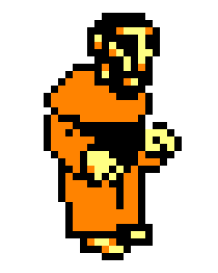
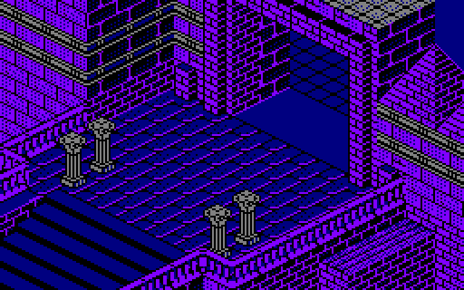
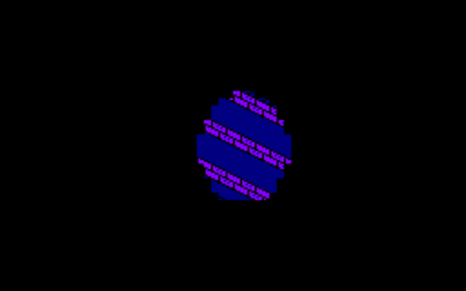

La pantalla nace de una descripción
En lugar de guardar una imagen completa de cada estancia, el juego conserva una breve descripción de sus piezas. Al entrar en ella, lee esa descripción, dibuja cada pieza con tiles y compone la arquitectura. Después añade personajes, puertas y objetos.
Contenido avanzadoAlcance, fuentes y límites de la reconstrucción
Qué estamos viendo exactamente
La explicación principal describe el sistema original de Amstrad CPC, comprobado mediante una reconstrucción de su funcionamiento. Las láminas muestran la arquitectura de la estancia; los personajes y objetos se añaden después. Los nombres legibles de algoritmos y variables se han creado para esta explicación.
- Base técnica
- Selección de estancia, descripciones, recetas, rejillas, profundidad, tiles, máscaras y paleta.
- Comparación gráfica
- El selector muestra cómo otras versiones reinterpretan la arquitectura; la tabla inferior resume qué comparten y en qué se diferencian.
| Versión gráfica | Qué parte del sistema comparte | Diferencia principal |
|---|---|---|
| Amstrad CPC | Descripciones, recetas, dos capas, máscaras y paletas de cuatro colores. | Es la versión de referencia para la explicación principal. |
| PC CGA | La misma organización general de estancias, recetas y dos capas. | Usa otra codificación de píxeles y otro proceso para copiar la imagen a vídeo. |
| ZX Spectrum | Su conversión también usa descripciones, recetas y tiles con máscara. | Los dos colores visibles dependen de la planta y del momento del día. |
| MSX | Su conversión también usa descripciones, recetas y tiles con máscara. | Tiene sus propios tiles y cambia los colores según la planta y el momento del día. |
| Remake VGA | Recupera la arquitectura y amplía el sistema de profundidad. | Es una reinterpretación posterior con tiles redibujados y 256 colores. |
Cuatro palabras que usaremos
Designan partes distintas del proceso. Esta fila sirve de vocabulario; los pasos vienen después.
Del mundo a la pantalla, en siete pasos
Ahora sí: cada caja conduce a la siguiente, de izquierda a derecha.
AL CAMBIAR DE CELDA O DE PLANTA:
planta ← planta correspondiente a posición.z
celda ← (posición.x DIV 16, posición.y DIV 16)
estancia ← identificador guardado en mapa_del_mundo[planta, celda]
vaciar las dos capas de tiles
rellenar la imagen con el color de iluminaciónPARA CADA colocación de la descripción de estancia:
receta ← definición asociada a colocación.tipo
seguir sus instrucciones desde colocación.posición,
usando colocación.parámetros
y colocación.altura
PARA CADA celda_visible:
aplicar máscara y color del tile de menor profundidad
aplicar máscara y color del tile de mayor profundidadEl juego reconstruye la arquitectura cuando la cámara entra en otra celda del mundo o cambia de planta. Mientras la cámara permanezca allí, reutiliza esa imagen y dibuja sobre ella los elementos móviles.
Tres espacios de coordenadas
El sistema usa tres rejillas distintas: una sitúa la cámara en la abadía, otra construye la estancia con tiles y la tercera corresponde a los píxeles de la pantalla.
1. La celda del mundo
Los personajes se mueven con coordenadas que abarcan toda la abadía. El juego divide las coordenadas X e Y entre dieciséis para obtener la celda donde está la cámara. La altura selecciona una de las tres plantas: baja, primera o biblioteca.
Después comprueba si las coordenadas de la celda son pares o impares. Las cuatro combinaciones posibles determinan desde qué orientación isométrica se muestra la estancia.
celda_x ← posición_x DIV 16
celda_y ← posición_y DIV 16
si altura está bajo el primer límite: planta ← BAJA
si altura está entre ambos límites: planta ← PRIMERA
si altura supera el segundo límite: planta ← BIBLIOTECA
par_x ← celda_x MOD 2
par_y ← celda_y MOD 2
orientación ← combinación de par_x y par_y
estancia ← mapa_de_estancias[planta, celda_x, celda_y]2. La rejilla de construcción
Las recetas no dibujan directamente en pantalla. Trabajan con coordenadas de una rejilla lógica de 32 columnas por 36 filas. La posición inicial de la pieza, sus parámetros y su orientación determinan por qué celdas avanza la receta y dónde emite cada tile.
El juego no necesita almacenar las 1.152 celdas completas: conserva únicamente las que coinciden con una ventana central. Aquí basta con comprender el recorrido y la colocación; la profundidad se explica más adelante.
PARA CADA tile emitido por una receta:
destino_x ← origen_x + desplazamiento_x
destino_y ← origen_y + desplazamiento_y
si el destino cae dentro de la ventana central:
guardar el tile en la celda visible correspondiente3. La ventana de pantalla
La parte central de la rejilla corresponde al búfer visible: 16 columnas por 20 filas. Los márgenes de ocho coordenadas sitúan esta ventana dentro del espacio de construcción.
Como cada tile mide 16 × 8 píxeles, el resultado arquitectónico ocupa 256 × 160 píxeles. Más adelante veremos que cada celda conserva información de profundidad; por ahora basta con reconocer la ventana que llegará a la pantalla.
PARA fila DESDE 0 HASTA 19:
PARA columna DESDE 0 HASTA 15:
construcción_x ← columna + margen_x
construcción_y ← fila + margen_y
copiar la celda visible correspondienteUn bloque es un pequeño programa de dibujo
La descripción de una estancia contiene una lista de colocaciones. Cada colocación elige una receta, indica dónde debe comenzar y aporta hasta dos parámetros. Algunas incluyen además una altura para decidir qué piezas quedan delante de otras.
Cada estancia ocupa sólo los bytes que necesita
Una estancia sencilla tiene menos colocaciones que una compleja. Por eso cada descripción guarda su propia longitud, contiene únicamente las colocaciones necesarias y termina con una marca de final. Para encontrar una estancia concreta, el programa va sumando las longitudes de las anteriores.
Cada colocación ocupa tres bytes: en ellos guarda el tipo de bloque, dos coordenadas locales y dos parámetros pequeños. Sólo utiliza un cuarto byte cuando necesita una altura inicial. Guardar dos mapas completos de 16 × 20 celdas para las 116 entradas exigiría al menos 74.240 bytes; la lista compacta de todas las descripciones ocupa 9.014.
DESCRIPCIÓN DE ESTANCIA
longitud total
colocación 1
colocación 2
...
marca de final
COLOCACIÓN
tipo de receta
origen_x + parámetro_1
origen_y + parámetro_2
altura opcional256 tiles de 16 × 8 píxeles
Los detalles de piedra, madera, suelo, bordes y sombras se guardan en estas piezas gráficas. Las recetas combinan varios tiles para formar un elemento arquitectónico completo.
Cuatro ejemplos de bloque
Una receta puede dibujar una arcada, una escalera, una hilera de ventanas o un muro. Sus parámetros modifican la longitud, la altura o la orientación sin almacenar otra imagen completa.
Los parámetros cambian el resultado
Al comenzar, la receta recibe los tiles que puede usar, una posición inicial y los parámetros de la colocación. A continuación ejecuta una secuencia de órdenes sencillas.
Las órdenes pueden colocar uno o varios tiles, mover la posición de dibujo, repetir una parte, guardar y recuperar una posición, reflejar horizontalmente una pieza o llamar a otra receta. Así, una sola definición produce paredes de distinta longitud, escaleras de varios tamaños o arcadas orientadas hacia lados opuestos.
EJEMPLO CONCEPTUAL — NO ES UNA RECETA TRANSCRITA
RECETA muro_con_arcos(origen, longitud, altura):
cursor ← origen
REPETIR longitud VECES:
EMITIR tile_de_pilar EN cursor
MOVER cursor A LA DERECHA
REPETIR altura VECES:
EMITIR tile_de_arco EN cursor
MOVER cursor HACIA ARRIBA
RESTAURAR cursor A LA BASE
REFLEJAR vocabulario SI cambia_la_orientación
FINALIZAR recetaCómo leer el ejemplo: el cursor señala la celda donde se colocará el próximo tile; emitir significa escribirlo en la rejilla; restaurar la base devuelve el cursor al pie de la pieza; y reflejar invierte la orientación horizontal. El algoritmo es un ejemplo explicativo, no la transcripción de una receta histórica. Las láminas muestran ejecuciones reales, aunque otros parámetros podrían cambiar su tamaño u orientación.
Mirar más de cercaEl intérprete de recetas
Cada tipo conduce a una definición formada por dos partes: una lista local de doce valores —normalmente identificadores de tile y constantes— y la secuencia de instrucciones. Al comenzar, se añaden los dos parámetros de la colocación, la altura opcional y dos coordenadas de profundidad: diecisiete valores de trabajo en total, además de un cursor y una pequeña pila.
El intérprete puede emitir y desplazar, repetir y restaurar, calcular, transformar coordenadas e invocar otra receta. Las hileras de tiles poseen su propia forma abreviada: una orden puede emitir una pieza, avanzar, repetirla y continuar hasta la siguiente instrucción principal. Así se describen suelos, peldaños o paredes largas con muy pocos datos.
Sigamos la estancia 17
Este ejemplo muestra cómo una descripción se convierte en una estancia completa. «17» es su identificador hexadecimal; no indica una coordenada ni el número decimal diecisiete.
Construye la estancia paso a paso
«Construcción» muestra cómo las 32 colocaciones forman la arquitectura CPC y detalla qué cambia cada receta en la rejilla de tiles. «Copia a pantalla» cambia a PC CGA para reproducir el recorrido documentado de sus 320 celdas visibles.
Se aplica el color de fondo a la estancia
Todavía no se ha ejecutado ninguna colocación. Este color ya forma parte del resultado: donde la máscara de un tile conserve la imagen anterior, seguirá viéndose este fondo.
Detalles avanzados
- Estancia
- 17 hexadecimal
- Colocaciones
- 0 de 32
La demostración compara dos versiones: la fase «Construcción» usa la descripción y los gráficos CPC reconstruidos. La fase «Copia a pantalla» usa el recorrido y los gráficos de PC CGA. En ambos casos se muestra sólo la arquitectura; personajes, puertas, objetos y lámpara se añaden después.
Las 93 estanciasNuestra demostración sigue una sola sala. El Visor de habitaciones de La Abadía del Crimen, creado por Manuel Pazos, permite recorrerlas todas paso a paso, cambiar los gráficos y comprobar qué salas no existen en el mapa reducido de cinta para CPC.
Mirar más de cercaPor qué la copia PC CGA empieza en el centro
En PC CGA, una vez llena la rejilla, el programa no copia las celdas fila por fila. Empieza en la posición (7, 8), cerca del centro, y avanza en franjas hacia abajo, derecha, arriba e izquierda. Las franjas crecen en cada vuelta hasta cubrir las 16 × 20 celdas visibles.
El recorrido sólo determina el orden en que aparece la imagen durante la copia. El resultado final no cambia: en cada celda se combinan en orden los dos tiles conservados. Cada tile ocupa ocho filas de dieciséis píxeles; su máscara decide cuáles conservan el color anterior y cuáles lo sustituyen.
Dos tiles pueden ocupar la misma celda
No son dos imágenes completas llamadas «fondo» y «frente». Cada celda visible conserva hasta dos tiles con sus coordenadas de profundidad. Cuando se redibuja un personaje, su posición determina cuáles se mezclan antes y cuáles después.



Dos valores para ordenar los tiles
Cuando una colocación incluye altura, el sistema la combina con la posición local del tile. El cálculo produce dos valores de profundidad para ese tile, no una profundidad distinta para cada píxel. La receta puede modificar esos valores mientras dibuja.
Si varias piezas llegan a la misma celda, el programa compara sus valores y conserva hasta dos tiles con sus datos de profundidad. «Detrás» y «delante» no son etiquetas permanentes: se deciden al comparar esos valores con la posición concreta del personaje.
mitad_altura ← altura DIV 2
profundidad_a ← tile_y + mitad_altura + tile_x − 15
profundidad_b ← tile_y + mitad_altura − tile_x + 16
comparar profundidad del tile nuevo
con los dos huecos conservadosLa máscara controla la forma de cada tile
Antes de colocar un tile, esa zona ya contiene el color de fondo u otro tile. La máscara de composición indica en qué píxeles debe conservarse esa imagen anterior y en cuáles debe dibujarse el tile nuevo.
Por ejemplo, la máscara de un arco conserva el suelo alrededor de su borde diagonal. Además, un píxel negro puede ser opaco: negro no significa transparente.
Mirar más de cercaDel tile codificado a dieciséis píxeles
Cada tile CPC contiene ocho filas de cuatro bytes: 32 bytes en total. En el modo gráfico empleado, cada byte codifica cuatro píxeles; al desplegarlo aparecen dieciséis píxeles por fila y cuatro índices de color posibles. La mitad superior de los 256 identificadores selecciona la segunda pareja de tablas de composición.
Para cada fragmento se lee primero el color que ya hay en pantalla. Una tabla decide qué parte se conserva y otra qué aporta el tile nuevo. Día y noche no alteran la máscara: cambian los colores asociados a los índices.
destino ← (destino Y máscara) O colorLa noche cambia los colores; la oscuridad limita la visión
La hora determina los colores. El tipo de estancia determina cuánto puede verse. Una estancia normal sigue mostrándose completa durante la noche; una estancia oscura sólo se ve dentro del alcance de la lámpara.
Dos preguntas, en este orden
1. ¿Es de día o de noche? El juego asigna una paleta distinta a los mismos datos gráficos. Este cambio modifica los colores, no la parte visible de la estancia.
2. ¿La estancia está marcada como oscura? Si lo está, el juego oculta la arquitectura completa. La lámpara revela únicamente una zona alrededor de Adso.
1 · MOMENTO DEL DÍA
elegir paleta diurna o nocturna
2 · TIPO DE ESTANCIA
normal → mostrar la arquitectura completa
oscura → mostrar sólo el alcance de la lámpara


Estas tres láminas se muestran siempre con gráficos de Amstrad CPC, con independencia del selector superior. La tercera es una reconstrucción explicativa, no una captura histórica: aplica el patrón de luz CPC conservado en el código a la arquitectura reconstruida de la estancia 68 del laberinto. Extender artificialmente ese patrón a las demás versiones no representaría fielmente su funcionamiento.
El relieve se calcula por separado
La altura de una colocación sirve para ordenar los tiles arquitectónicos. El movimiento utiliza otra información: un campo de alturas del terreno de 24 × 24 celdas que indica el nivel del suelo alrededor de los personajes.
Una altura para cada posición del suelo
Cada celda del campo guarda la altura del terreno en ese punto. Las superficies planas repiten el mismo valor. En escaleras y pendientes, el valor aumenta o disminuye paso a paso. La cuadrícula cubre la celda actual del mundo, de 16 × 16 unidades, y añade un margen de cuatro unidades por cada lado; por eso mide 24 × 24.
El juego consulta estos valores para decidir si un personaje puede avanzar, subir o bajar, y para situarlo respecto a la arquitectura. Las recetas arquitectónicas se ocupan de dibujar la estancia.
vaciar cuadrícula_de_alturas[24, 24]
origen ← celda_actual × 16 − margen
PARA CADA forma EN geometría_de_la_planta:
recorte ← parte de forma que cae dentro de ventana_local
si forma ES rellano:
llenar recorte con altura_inicial
si forma ES rampa:
altura ← altura_inicial
PARA CADA paso EN dirección_de_la_rampa:
guardar altura en la celda
altura ← altura + pendienteMirar más de cercaCinco formas construyen el relieve
Cada forma conserva una altura inicial, una posición y dos dimensiones. Una de las cinco clases rellena un rectángulo a altura constante. Las otras cuatro crean rampas: la altura aumenta o disminuye paso a paso en una de las dos direcciones del plano.
Las dos dimensiones pueden ir empaquetadas juntas o separadas mediante una unidad adicional. Antes de escribirla, cada forma se recorta para ajustarla a la ventana local. Así, una misma descripción continua de la planta aporta sólo la porción que rodea a la estancia actual.
Cada movimiento redibuja sólo una parte
Ya hemos visto cómo la profundidad mezcla arquitectura y personajes. Queda una cuestión práctica: cuando algo se mueve, el juego sólo recompone la región de pantalla que ha cambiado.
Sólo se recompone lo que ha cambiado
La arquitectura completa vuelve a construirse al cambiar de estancia. Mientras la cámara sigue en la misma, el sistema localiza cada sprite modificado —un personaje, una puerta, un objeto, un reflejo o la luz de la lámpara—.
Para cada uno delimita un rectángulo que abarca tanto su posición anterior como la nueva, lo amplía hasta los límites de los tiles de 16 × 8 píxeles y recompone dentro de él la arquitectura y todos los sprites que se solapan. El pergamino, los textos y el marcador inferior utilizan sistemas de dibujo independientes.
si cambia_la_estancia:
arquitectura ← construir y componer los tiles de la estancia
alturas ← construir el campo de alturas del terreno
EN CADA FOTOGRAMA:
actualizar personajes, puertas, objetos, reflejos y luz
ordenar los sprites según su profundidad
PARA CADA sprite visible que haya cambiado:
área ← rectángulo que abarca su posición anterior y la nueva
ajustar área a los límites de los tiles de 16 × 8 píxeles
recomponer en ella la arquitectura y los sprites solapadosContenido avanzadoEvidencia, límites y términos
Cómo sabemos que encaja
Las cifras, formatos y algoritmos presentados como hechos se apoyan en estructuras coherentes, en la ejecución completa de todas las descripciones y en la comparación visual. Los nombres legibles de operaciones, recetas y variables son nuestros: describen su función, pero no atribuyen vocabulario histórico a los programadores.
- Comprobación estructural. Las 116 descripciones se recorren hasta su final y las instrucciones conocidas se ejecutan sin encontrar una operación desconocida.
- Comprobación del código. La selección de estancia, el intérprete, las fórmulas de profundidad, las dos capas y las máscaras se han comprobado en la reconstrucción. El recorrido desde el centro está documentado específicamente en la versión PC CGA.
- Catálogo con excepciones. De las 87 definiciones no nulas, cinco no llegan a utilizarse en las descripciones; tres de ellas terminan sin emitir ningún tile.
- Límite de esta guía. Aquí se reconstruyen la arquitectura de la estancia y el campo de alturas. Personajes, puertas, objetos, reflejos, restauración de la imagen, lámpara, pergamino, textos y marcador pertenecen a otros sistemas.
Para reconstruir la arquitectura se necesitan, en este orden, el mapa de estancias, el lector de descripciones, el intérprete de bloques, las dos capas de tiles y la composición mediante máscaras. Los personajes, los objetos y la iluminación limitada se implementarían después como sistemas separados.